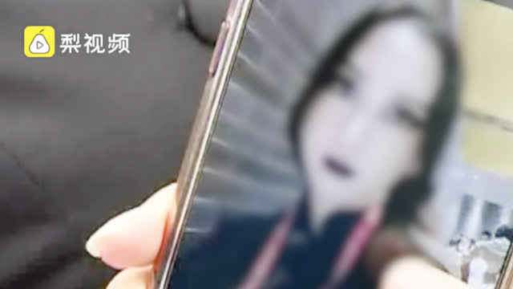

很期望以后评论把每个人所在城市显示出来，我怎么感觉很多评论人所在地方是没有地铁的，可能很多人都没坐过地铁，更可能有些评论者一辈子都没出过离家10公里的外的地方。安检员可能也来自这样的地方。
@头条新闻:
【地铁#安检要求哥特妆乘客原地卸妆# 当事女生：不常见不等于奇装异服 】近日，广州一女大学生投诉称，化浓妆坐地铁进站被阻拦，安检时要求原地卸妆。该女生说，自己当时黑色嘴唇紫色眼影，觉得又生气又可笑。一位地铁安检员介绍，乘客如果是很奇怪或恐怖的装扮就不可以进站。
】近日，广州一女大学生投诉称，化浓妆坐地铁进站被阻拦，安检时要求原地卸妆。该女生说，自己当时黑色嘴唇紫色眼影，觉得又生气又可笑。一位地铁安检员介绍，乘客如果是很奇怪或恐怖的装扮就不可以进站。 一手video的秒拍视频
一手video的秒拍视频

539万次播放
01:24